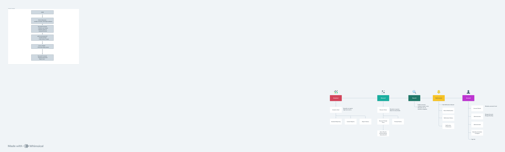

Project Overview
This project utilizes the Llama 2 language model to dynamically generate blog content tailored to specific topics, word counts, and target audiences. The system architecture includes:
- Integration of Llama 2 using LangChain library.
- Data ingestion and preprocessing for prompt creation.
- Generation of blog posts based on user inputs.
- Deployment and automation using AWS Lambda and GitHub Actions.
System Architecture Diagram

Data Flow Diagram
Project Details
This project encompasses a structured workflow involving:
- Exploratory data analysis (EDA) for understanding user input patterns.
- Prompt template creation to guide Llama 2 for content generation.
- Model evaluation and fine-tuning for optimal performance.
- Integration with Streamlit for user-friendly web interface.